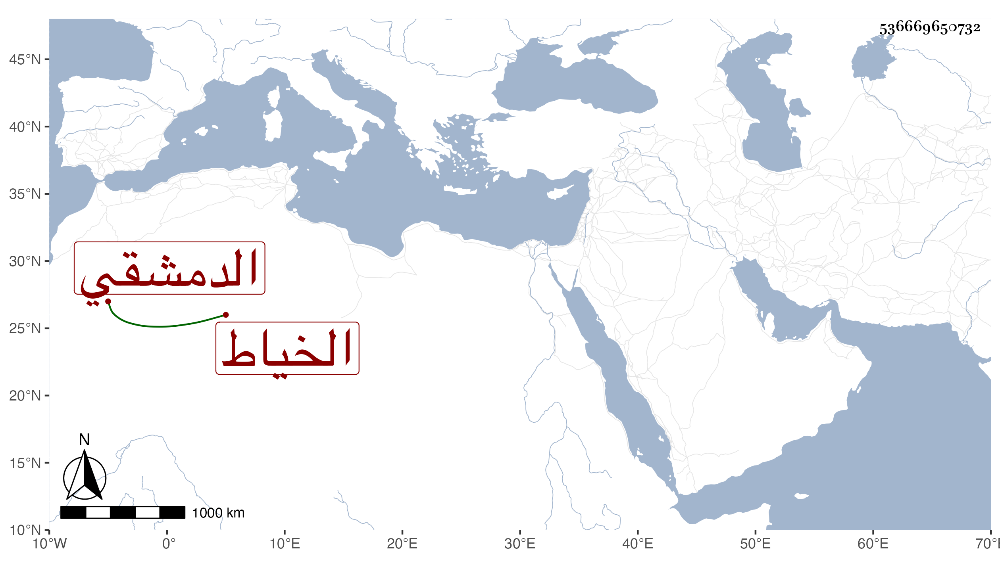

0902Sakhawi.DawLamic.ITO20230111-ara1.EIS1600.536669650732
Biography ID: 536669650732
505
محمد بن علي بن عبد الله الدمشقي الخياط ويعرف بابن الزيات . ولد قبل سنة سبعين وسبعمائة فانه سمع في سنة أربع وثمانين وسبعمائة من المحب الصامت خامس المز كيات وحدث به سمع منه الفضلاء وكان صالحا معمرا كثير التردد إلى مسجد القصب أوقات الصلاة . مات قريب الأربعين ظنا .
